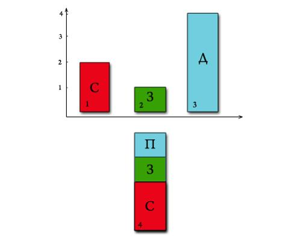
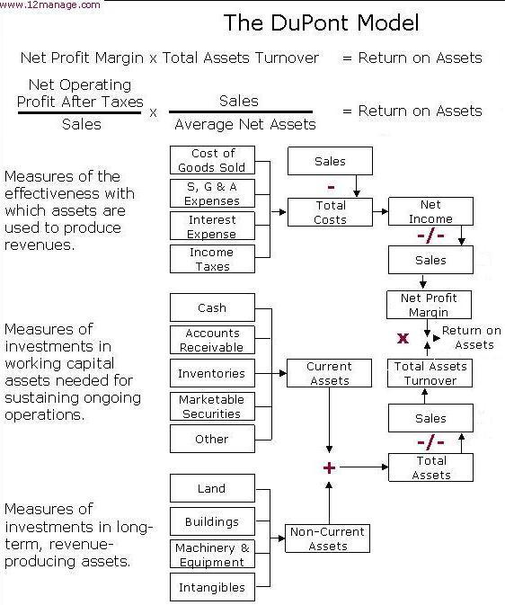
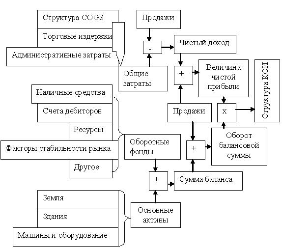

Финансовые аспекты
И наконец, последний процесс предметной области, который следует осознать менеджеру проекта, - это учет финансовых аспектов проекта. Многие из методик, включенные в экономические модели выбора.
ROI (Return on Investment) - коэффициент окупаемости инвестиций. Данный показатель является одним из способов измерения эффективности ваших вложений.
Каждый владелец веб-сайта является инвестором, который инвестирует своё время, силы и деньги в развитие интернет-ресурса. И как любого инвестора, его прежде всего интересует, как быстро окупятся его инвестиции и сколько прибыли они ему принесут. Интересует отдача от ресурса. И количественно эту отдачу можно измерить при помощи этого коэффициента. Интернет-маркетинг тем и хорош, что здесь намного проще и точнее осуществляются измерения каких либо действий, в том числе и окупаемость инвестиций можно измерить значительно проще, чем в обычном маркетинге.
Например, при использовании рекламы, владелец веб-сайта наверняка захочет узнать, насколько она эффективна и стоит ли дальше проводить эту рекламную кампанию. Если выручка от продаж, полученная в результате этой рекламной кампании, больше, чем затраты на неё, то ROI в данном случае является положительным.
Расчет данного коэффициента осуществляется по следующей формуле:
ROI = (Доход - Себестоимость) / Затраты
Если желаете видеть результат в процентах, то ещё надо умножить на 100.
Значение больше единицы (ROI > 1), говорит о финансовой выгоде от совершенных инвестиций.
Значение меньше единицы (ROI <1) о том что совершённые вложения не являются выгодными для вас, они убыточны.
Если же ROI = 1, то это говорит о безубыточности инвестиций. Ваши затраты полностью окупаются.
Графически это выглядит так:

На данном примере можно увидеть, что если себестоимость нашего товара/услуги равна 2-ум ед. (столбец №1) и у нас вышло, что мы потратили на его рекламу, к примеру, в Яндекс.Директе, 1 ед. (столбец №2), а доход от этой рекламы получили равным 4-ём ед., то как можно заметить (столбец №4), мы оказались в плюсе, то есть ROI оказался больше 1 (ROI>1). Можно произвести расчет, чтобы в этом убедиться.
ROI = ( 4 - 2 ) / 1 = 2 ,
ROI = 2
В данном случае реклама оказалась эффективной, мы заработали дополнительную денежную единицу. Прибыль равна 1-ой единице. Если бы ROI был меньше 1-го (ROI<1), то это бы свидетельствовало о неэффективности данной рекламы.
DuPont Model (Модель Du Pont) - метод, который можно использовать для анализа доходности компании, используя традиционные инструменты для определения эффективности менеджмента. Для этого модель DuPont интегрирует компоненты Отчета о прибылях и убытках и Балансового отчета.
История возникновения модели финансового анализа Du Pont.
Модель DuPont финансового анализа была сформулироована F. Donaldson Brown, электротехником, который присоединился к финансовому отделу крупной химической компании в 1914. Немного позже, DuPont купила 23 процента акций General Motors Corp. и поставила перед Brown задачу привести в порядок запутанные финансы автомобильной компании . Это был, возможно, первый широкомасштабный проект реинжиниринга в США. Согласно Alfred Sloan, бывшему руководителю GM, во многом последующий успех GM принадлежал системе планирования и управления, разработанной Brown. Последующий успех приобрел известность модели DuPont в всех крупных корпорациях США. Она была доминирующей формой финансового анализа до 1970-х гг.
Рентабельность активов (Return on Assets) = Рентабельность чистой прибыли (Net Profit Margin) x Общая оборачиваемость активов (Total Assets Turnover) = Чистая операционная прибыль после налогов (Net Operating Profit After Taxes) / Продажи (Sales)x Средние нетто-продажи (Average Net Assets) / Продажи (Sales).
Наиболее широко применяется Финансовая модель DuPoin, которая показана на рис.4.1 - 4.2

Рисунок 4.1 - Финансовая модель DuPoint

Рисунок 4.2 - Финансовая модель DuPoint (*КОИ - коэффициент возврата инвестиций (Return of investment, ROI)).
Преимущества Модели Du Pont.
- Простота. Очень хороший инструмент для того, чтобы показать сотрудникам как они могут повлиять на результаты компании.
- Можно легко связать с планами компенсаций. Может быть использована для того, чтобы убедить менеджмент в необходимости определенных действий для повышения профессионального уровня функций закупок или сбыта.
Ограничения анализа DuPont. Недостатки.
- Основан на показателях бухгалтерского учета, которые не всегда надежны.
- Не включает стоимость капитала.
В общем случае каждый процесс выбора проекта либо решение относительно критерия анализа портфеля проектов, оказывающие влияние на цены продукта, стоимость единицы продукта, объем либо эффективность, будет определять величину прибыли или коэффициент оборота. И любое решение, оказывающее влияние на величину и вид долга, а также на величину собственных средств, будет оказывать влияние на финансовую структуру в той же степени, как это происходит с величиной стоимости.
Финансовые аналитики предметной области и фининспекторы во многих организациях применяют подобную методику анализа для принятия решений относительно финансирования проектов.
Несомненно, что для менеджеров проектов и специалистов по маркетингу продукта весьма важным является правильное понимание основных финансовых концепций, без чего была бы невозможной квалифицированная помощь заказчикам, которых тоже можно отнести к организаторам совместного дела, и успешная реализация выполняемых проектов и разрабатываемых продуктов.Использование финансового анализа в процессе выбора проектов предоставляет универсальное средство оценки - деньги.